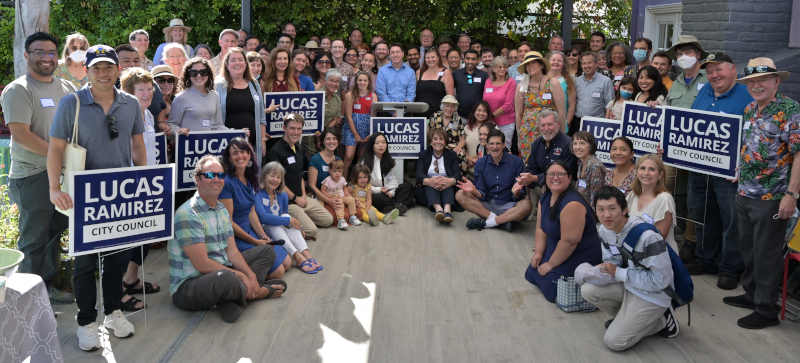

<section>
    <div class="row">
      <div class="large-12 columns">
        <figure>
          
          <figcaption>Campaign Kickoff</figcaption>
        </figure>
	      <br><p>Dear Friends,</p>

        <p>Four years ago, I ran for the Mountain View City Council to address the housing crisis, protect renters from displacement, improve bicycle and pedestrian safety, and help make local government more accessible and responsive to residents. With your support, the campaign was successful, and I have been blessed to serve our community – my hometown – as a Councilmember and, this year, as Mayor. <b>Thank you for this tremendous honor.</b></p>
		
		<p>A little more than one year into my service as a Councilmember, the Covid-19 pandemic shut down the economy and radically disrupted our community. The Council shifted its priorities to focus on pandemic response, relief, and now recovery. We were among the first cities to enact an eviction moratorium, and later we collaborated with the County of Santa Clara to use the Rengstorff Community Center as a highly-successful vaccination clinic. The City of Mountain View benefited greatly from the American Rescue Plan Act funding, which we used to stabilize the most vulnerable in our community by providing rent relief and direct financial assistance. We also provided no-interest loans and grants to small businesses, pivoted to entirely virtual meetings, invested in safe parking and homelessness services, and contributed to several non-profit organizations serving our neighbors in greatest need.</p>
		
		<p>We have had to respond to other crises during this already difficult time as well. Our Council created a Subcommittee on Race, Equity, and Inclusion, on which I was honored to serve, and a Public Safety Advisory Board, both in response to the Black Lives Matter and Stop Asian Hate movements. Our Council historically has taken bold action to mitigate the impacts of the climate crisis, and we remain committed to that work. </p>
		
		<p> In collaboration with my colleagues on the City Council, our stellar municipal employees, and our representatives at other levels of government, we have accomplished a lot, but much more work remains.</p>
		
		<p><b>For this reason, I am proud to announce that I will be running for re-election to the Mountain View City Council. </b></p>
		
		<p><em>I will once again need your help.</em> A small donation, a commitment to walk a precinct or phonebank, or even simply an offer to display a yard sign will go a long way. I am grateful for any support you are able to provide! </p>

        <p>Remaining accessible to you and promoting public participation in local government are among my top priorities. This website is updated frequently to help inform and engage residents and stakeholders. By hosting it on GitHub, I hope to encourage the community to utilize it as a dynamic platform and modify it to ensure that it provides the most useful and up-to-date information.</p>

        <p>It truly has been an honor and a privilege to serve you on the Mountain View City Council. I am grateful to have this opportunity to work with you to address the challenges facing our community and to preserve the high quality of life that we enjoy.</p>
		
		<p>If you have any ideas, recommendations, or feedback, please email me at <a href="mailto:lucas@ramirezforcouncil.com" target="_blank">lucas@ramirezforcouncil.com</a> -- or <a href="https://github.com/RamirezforCouncil/RamirezforCouncil.github.io" target="_blank">submit a pull request through GitHub to modify my website</a>.</p>
		
		<p>Finally, I send out a newsletter once or twice a month by email with information about upcoming Council agenda items, important announcements, and helpful resources. <a href="http://eepurl.com/dtwXcH" target="_blank">Click here to subscribe to the newsletter</a>. You can <a href="https://www.ramirezforcouncil.com/newsletters.html">read previous newsletters here</a>. If you know others who may be interested, please forward this email to them. </p>
		
		<p>Thank you again for your support, and I look forward to seeing you on the campaign trail! </p>

	      <p>Kind regards, <br>Lucas</p>
      </div>
    </div>
</section>
